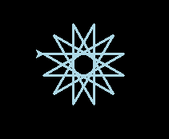
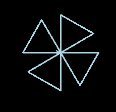

Python introductie¶
Variabelen en loops¶
Variabelen
Probeer deze code eens uit en kijk goed wat er gebeurt:
>>> getal = 45
>>> forward(getal)
>>> right(getal)
>>> forward(getal)
>>> getal = 90
>>> right(getal)
>>> forward(getal)
Het woord “getal” is hier een variabele. Een variabele heeft een naam die je zelf kiest en een waarde. Die waarde begint hier als 45 en wordt later ingesteld als 90.
Je kan Python ook rekensommetjes laten maken en de uitkomst in een variabele stoppen. Om te weten wat voor waarde een variabele heeft, type je de naam van de variabele in en druk je op enter. Probeer maar eens uit:
>>> getal1 = 1 + 1
>>> getal1
2
>>> getal2 = 9 - getal1
>>> getal2
7
>>> getal3 = getal2 * 2
>>> getal3
14
>>> getal4 = 28 / getal3
>>> getal4
2.0
Zoals je ziet: ‘*’ betekent vermenigvuldigen, en ‘/’ is delen door.
Herhaling
Je kan bepaalde commando’s ook meerdere keren laten uitvoeren, dat noemen we een loop:
>>> for teller in range(4):
... forward(100)
... right(90)
Let op: Nadat je dit getypt hebt moet je nog een keer op enter drukken, zodat Python weet dat je klaar bent met je loop.
In dit voorbeeld is “teller” een variabele die optelt en range() geeft aan tot welk getal geteld moet worden. Teller begint bij 0 en telt tot 4. Als je nu de waarde van teller vraagt, zie je dat het tellen is opgehouden voordat 4 werd bereikt:
>>> teller
3
Je kan teller dus ook gebruiken in je turtle opdrachten! Kun jij voorspellen wat er gebeurt als je onderstaande commando’s intypt?
>>> for teller in range(1,5):
... forward(50 * teller)
... right(90)
Met range(1,5) begint het tellen bij 1 en eindigt op 4 (voordat de 5 wordt bereikt).
Figuren tekenen¶
Veelhoek
Met een klein rekensommetje kun je ook een veelhoek tekenen! Om een veelhoek te tekenen moet je weten wat voor hoek je turtle moet maken. Gelukkig kan Python dat voor je berekenen: om de turtle helemaal rond te laten gaan moet deze 360 graden gedraaid zijn.
>>> aantal_punten = 5
>>> hoek = 360 / aantal_punten
>>> for teller in range(aantal_punten):
... forward(100)
... right(hoek)
Wat gebeurt er nu als je de variabele aantal_punten een hoger getal geeft?
Ster
De hoek die je nodig hebt voor een ster is moeilijker te berekenen. Sommige sterren zijn niet eens in 1 lijn te tekenen, bijvoorbeeld de 6-puntige ster. De 5-puntige ster is makkelijker:
>>> hoek = 144
>>> for teller in range(5):
... forward(100)
... right(hoek)
Opdrachten¶
Probeer de onderstaande figuren te tekenen.
Opdracht 2-A
Tip: De hoek is 150 graden.
Opdracht 2-B
Uitdaging: probeer zo min mogelijk commando’s te gebruiken om de opdracht uit te voeren. Lukt het in 5 regels? Vraag een mentor om tips!
Opdracht 2-C

Tip: Gebruik een zo klein mogelijke waarde in je forward() zodat de cirkel niet te groot wordt!